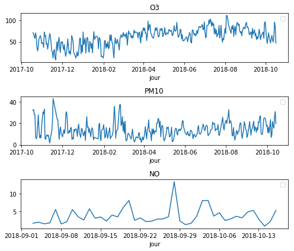
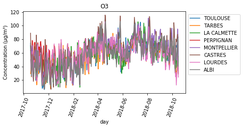
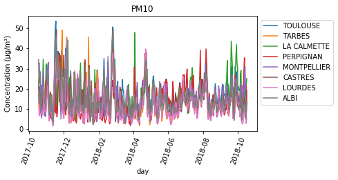
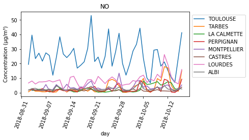
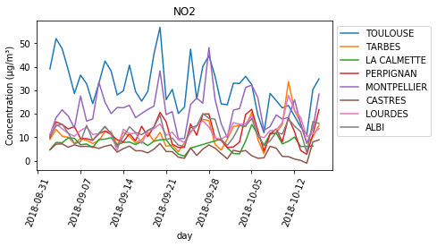

import os
import sys
# utile pour avoir un affichage identique dans divers notebook
sys.path.append("./codes")
import numpy as np
import matplotlib.pyplot as plt
plt.rcParams.update({'figure.max_open_warning': 25}) #
# commande "magique" pour améliorer la visualiation
%matplotlib notebook
# %matplotlib inlineAnalyse de la pollution en Occitanie
http://data-atmo-occitanie.opendata.arcgis.com/datasets/4a648b54876f485e92f22e2ad5a5da32_0
Auteur: Joseph Salmon joseph.salmon@umontpellier.fr
Sommaire ( TODO Harmonize in the end)
Visualisation de données, seaborn et pandas
import seaborn as sns
import pandas as pd
from pathlib import Path
directory = Path.cwd() # .parent
directory = directory.joinpath('prebuiltimages')
def my_saving_display(fig, directory, image_name, imageformat="pdf",
saving=False):
""""Saving with personal function."""
if saving is True:
fig.savefig(directory.joinpath(image_name + '.' + imageformat),
format=imageformat)from download import download
url = "http://josephsalmon.eu/enseignement/datasets/Mesure_journaliere_Region_Occitanie_Polluants_Principaux.csv"
path_target = "datasets/Mesure_journaliere_Region_Occitanie_Polluants_Principaux.csv"
download(url, path_target, replace=False)Replace is False and data exists, so doing nothing. Use replace==True to re-download the data.'datasets/Mesure_journaliere_Region_Occitanie_Polluants_Principaux.csv'df_pol_occ = pd.read_csv(path_target)
df_pol_occ.head(100)| X | Y | id | nom_dep | nom_com | code_insee | nom_station | code_station | typologie | influence | ... | metrique | date_debut | date_fin | statut_valid | x_l93 | y_l93 | x_wgs84 | y_wgs84 | geom | FID | |
|---|---|---|---|---|---|---|---|---|---|---|---|---|---|---|---|---|---|---|---|---|---|
| 0 | 1.41861 | 43.5756 | 12001 | HAUTE-GARONNE | TOULOUSE | 31555 | Toulouse-Jacquier Urbain\n | FR12004 | urban | Fond | ... | journaliere | 2017-12-15T01:00:00.000Z | 2017-12-16T00:00:00.000Z | t | 572227 | 6276450 | 1.41861 | 43.5756 | 0101000020E610000000000080A1B2F63F000000E0ABC9... | 12001 |
| 1 | 1.41861 | 43.5756 | 12002 | HAUTE-GARONNE | TOULOUSE | 31555 | Toulouse-Jacquier Urbain\n | FR12004 | urban | Fond | ... | journaliere | 2017-12-16T01:00:00.000Z | 2017-12-17T00:00:00.000Z | t | 572227 | 6276450 | 1.41861 | 43.5756 | 0101000020E610000000000080A1B2F63F000000E0ABC9... | 12002 |
| 2 | 1.41861 | 43.5756 | 12003 | HAUTE-GARONNE | TOULOUSE | 31555 | Toulouse-Jacquier Urbain\n | FR12004 | urban | Fond | ... | journaliere | 2017-12-17T01:00:00.000Z | 2017-12-18T00:00:00.000Z | t | 572227 | 6276450 | 1.41861 | 43.5756 | 0101000020E610000000000080A1B2F63F000000E0ABC9... | 12003 |
| 3 | 1.41861 | 43.5756 | 12004 | HAUTE-GARONNE | TOULOUSE | 31555 | Toulouse-Jacquier Urbain\n | FR12004 | urban | Fond | ... | journaliere | 2017-12-18T01:00:00.000Z | 2017-12-19T00:00:00.000Z | t | 572227 | 6276450 | 1.41861 | 43.5756 | 0101000020E610000000000080A1B2F63F000000E0ABC9... | 12004 |
| 4 | 1.41861 | 43.5756 | 12005 | HAUTE-GARONNE | TOULOUSE | 31555 | Toulouse-Jacquier Urbain\n | FR12004 | urban | Fond | ... | journaliere | 2017-12-19T01:00:00.000Z | 2017-12-20T00:00:00.000Z | t | 572227 | 6276450 | 1.41861 | 43.5756 | 0101000020E610000000000080A1B2F63F000000E0ABC9... | 12005 |
| 5 | 1.41861 | 43.5756 | 12006 | HAUTE-GARONNE | TOULOUSE | 31555 | Toulouse-Jacquier Urbain\n | FR12004 | urban | Fond | ... | journaliere | 2017-12-20T01:00:00.000Z | 2017-12-21T00:00:00.000Z | t | 572227 | 6276450 | 1.41861 | 43.5756 | 0101000020E610000000000080A1B2F63F000000E0ABC9... | 12006 |
| 6 | 1.41861 | 43.5756 | 12007 | HAUTE-GARONNE | TOULOUSE | 31555 | Toulouse-Jacquier Urbain\n | FR12004 | urban | Fond | ... | journaliere | 2017-12-21T01:00:00.000Z | 2017-12-22T00:00:00.000Z | t | 572227 | 6276450 | 1.41861 | 43.5756 | 0101000020E610000000000080A1B2F63F000000E0ABC9... | 12007 |
| 7 | 1.41861 | 43.5756 | 12008 | HAUTE-GARONNE | TOULOUSE | 31555 | Toulouse-Jacquier Urbain\n | FR12004 | urban | Fond | ... | journaliere | 2017-12-22T01:00:00.000Z | 2017-12-23T00:00:00.000Z | t | 572227 | 6276450 | 1.41861 | 43.5756 | 0101000020E610000000000080A1B2F63F000000E0ABC9... | 12008 |
| 8 | 1.41861 | 43.5756 | 12009 | HAUTE-GARONNE | TOULOUSE | 31555 | Toulouse-Jacquier Urbain\n | FR12004 | urban | Fond | ... | journaliere | 2017-12-23T01:00:00.000Z | 2017-12-24T00:00:00.000Z | t | 572227 | 6276450 | 1.41861 | 43.5756 | 0101000020E610000000000080A1B2F63F000000E0ABC9... | 12009 |
| 9 | 1.41861 | 43.5756 | 12010 | HAUTE-GARONNE | TOULOUSE | 31555 | Toulouse-Jacquier Urbain\n | FR12004 | urban | Fond | ... | journaliere | 2017-12-24T01:00:00.000Z | 2017-12-25T00:00:00.000Z | t | 572227 | 6276450 | 1.41861 | 43.5756 | 0101000020E610000000000080A1B2F63F000000E0ABC9... | 12010 |
| 10 | 1.41861 | 43.5756 | 12011 | HAUTE-GARONNE | TOULOUSE | 31555 | Toulouse-Jacquier Urbain\n | FR12004 | urban | Fond | ... | journaliere | 2017-12-25T01:00:00.000Z | 2017-12-26T00:00:00.000Z | t | 572227 | 6276450 | 1.41861 | 43.5756 | 0101000020E610000000000080A1B2F63F000000E0ABC9... | 12011 |
| 11 | 1.41861 | 43.5756 | 12012 | HAUTE-GARONNE | TOULOUSE | 31555 | Toulouse-Jacquier Urbain\n | FR12004 | urban | Fond | ... | journaliere | 2017-12-26T01:00:00.000Z | 2017-12-27T00:00:00.000Z | t | 572227 | 6276450 | 1.41861 | 43.5756 | 0101000020E610000000000080A1B2F63F000000E0ABC9... | 12012 |
| 12 | 1.41861 | 43.5756 | 12013 | HAUTE-GARONNE | TOULOUSE | 31555 | Toulouse-Jacquier Urbain\n | FR12004 | urban | Fond | ... | journaliere | 2017-12-27T01:00:00.000Z | 2017-12-28T00:00:00.000Z | t | 572227 | 6276450 | 1.41861 | 43.5756 | 0101000020E610000000000080A1B2F63F000000E0ABC9... | 12013 |
| 13 | 1.41861 | 43.5756 | 12014 | HAUTE-GARONNE | TOULOUSE | 31555 | Toulouse-Jacquier Urbain\n | FR12004 | urban | Fond | ... | journaliere | 2017-12-28T01:00:00.000Z | 2017-12-29T00:00:00.000Z | t | 572227 | 6276450 | 1.41861 | 43.5756 | 0101000020E610000000000080A1B2F63F000000E0ABC9... | 12014 |
| 14 | 1.41861 | 43.5756 | 12015 | HAUTE-GARONNE | TOULOUSE | 31555 | Toulouse-Jacquier Urbain\n | FR12004 | urban | Fond | ... | journaliere | 2017-12-29T01:00:00.000Z | 2017-12-30T00:00:00.000Z | t | 572227 | 6276450 | 1.41861 | 43.5756 | 0101000020E610000000000080A1B2F63F000000E0ABC9... | 12015 |
| 15 | 1.41861 | 43.5756 | 12016 | HAUTE-GARONNE | TOULOUSE | 31555 | Toulouse-Jacquier Urbain\n | FR12004 | urban | Fond | ... | journaliere | 2017-12-30T01:00:00.000Z | 2017-12-31T00:00:00.000Z | t | 572227 | 6276450 | 1.41861 | 43.5756 | 0101000020E610000000000080A1B2F63F000000E0ABC9... | 12016 |
| 16 | 1.41861 | 43.5756 | 12017 | HAUTE-GARONNE | TOULOUSE | 31555 | Toulouse-Jacquier Urbain\n | FR12004 | urban | Fond | ... | journaliere | 2017-12-31T01:00:00.000Z | 2018-01-01T00:00:00.000Z | t | 572227 | 6276450 | 1.41861 | 43.5756 | 0101000020E610000000000080A1B2F63F000000E0ABC9... | 12017 |
| 17 | 1.41861 | 43.5756 | 12018 | HAUTE-GARONNE | TOULOUSE | 31555 | Toulouse-Jacquier Urbain\n | FR12004 | urban | Fond | ... | journaliere | 2018-01-01T01:00:00.000Z | 2018-01-02T00:00:00.000Z | t | 572227 | 6276450 | 1.41861 | 43.5756 | 0101000020E610000000000080A1B2F63F000000E0ABC9... | 12018 |
| 18 | 1.41861 | 43.5756 | 12019 | HAUTE-GARONNE | TOULOUSE | 31555 | Toulouse-Jacquier Urbain\n | FR12004 | urban | Fond | ... | journaliere | 2018-01-02T01:00:00.000Z | 2018-01-03T00:00:00.000Z | t | 572227 | 6276450 | 1.41861 | 43.5756 | 0101000020E610000000000080A1B2F63F000000E0ABC9... | 12019 |
| 19 | 1.41861 | 43.5756 | 12020 | HAUTE-GARONNE | TOULOUSE | 31555 | Toulouse-Jacquier Urbain\n | FR12004 | urban | Fond | ... | journaliere | 2018-01-03T01:00:00.000Z | 2018-01-04T00:00:00.000Z | t | 572227 | 6276450 | 1.41861 | 43.5756 | 0101000020E610000000000080A1B2F63F000000E0ABC9... | 12020 |
| 20 | 1.41861 | 43.5756 | 12021 | HAUTE-GARONNE | TOULOUSE | 31555 | Toulouse-Jacquier Urbain\n | FR12004 | urban | Fond | ... | journaliere | 2018-01-04T01:00:00.000Z | 2018-01-05T00:00:00.000Z | t | 572227 | 6276450 | 1.41861 | 43.5756 | 0101000020E610000000000080A1B2F63F000000E0ABC9... | 12021 |
| 21 | 1.41861 | 43.5756 | 12022 | HAUTE-GARONNE | TOULOUSE | 31555 | Toulouse-Jacquier Urbain\n | FR12004 | urban | Fond | ... | journaliere | 2018-01-05T01:00:00.000Z | 2018-01-06T00:00:00.000Z | t | 572227 | 6276450 | 1.41861 | 43.5756 | 0101000020E610000000000080A1B2F63F000000E0ABC9... | 12022 |
| 22 | 1.41861 | 43.5756 | 12023 | HAUTE-GARONNE | TOULOUSE | 31555 | Toulouse-Jacquier Urbain\n | FR12004 | urban | Fond | ... | journaliere | 2018-01-06T01:00:00.000Z | 2018-01-07T00:00:00.000Z | t | 572227 | 6276450 | 1.41861 | 43.5756 | 0101000020E610000000000080A1B2F63F000000E0ABC9... | 12023 |
| 23 | 1.41861 | 43.5756 | 12024 | HAUTE-GARONNE | TOULOUSE | 31555 | Toulouse-Jacquier Urbain\n | FR12004 | urban | Fond | ... | journaliere | 2018-01-07T01:00:00.000Z | 2018-01-08T00:00:00.000Z | t | 572227 | 6276450 | 1.41861 | 43.5756 | 0101000020E610000000000080A1B2F63F000000E0ABC9... | 12024 |
| 24 | 1.41861 | 43.5756 | 12025 | HAUTE-GARONNE | TOULOUSE | 31555 | Toulouse-Jacquier Urbain\n | FR12004 | urban | Fond | ... | journaliere | 2018-01-08T01:00:00.000Z | 2018-01-09T00:00:00.000Z | t | 572227 | 6276450 | 1.41861 | 43.5756 | 0101000020E610000000000080A1B2F63F000000E0ABC9... | 12025 |
| 25 | 1.41861 | 43.5756 | 12026 | HAUTE-GARONNE | TOULOUSE | 31555 | Toulouse-Jacquier Urbain\n | FR12004 | urban | Fond | ... | journaliere | 2018-01-09T01:00:00.000Z | 2018-01-10T00:00:00.000Z | t | 572227 | 6276450 | 1.41861 | 43.5756 | 0101000020E610000000000080A1B2F63F000000E0ABC9... | 12026 |
| 26 | 1.41861 | 43.5756 | 12027 | HAUTE-GARONNE | TOULOUSE | 31555 | Toulouse-Jacquier Urbain\n | FR12004 | urban | Fond | ... | journaliere | 2018-01-10T01:00:00.000Z | 2018-01-11T00:00:00.000Z | t | 572227 | 6276450 | 1.41861 | 43.5756 | 0101000020E610000000000080A1B2F63F000000E0ABC9... | 12027 |
| 27 | 1.41861 | 43.5756 | 12028 | HAUTE-GARONNE | TOULOUSE | 31555 | Toulouse-Jacquier Urbain\n | FR12004 | urban | Fond | ... | journaliere | 2018-01-11T01:00:00.000Z | 2018-01-12T00:00:00.000Z | t | 572227 | 6276450 | 1.41861 | 43.5756 | 0101000020E610000000000080A1B2F63F000000E0ABC9... | 12028 |
| 28 | 1.41861 | 43.5756 | 12029 | HAUTE-GARONNE | TOULOUSE | 31555 | Toulouse-Jacquier Urbain\n | FR12004 | urban | Fond | ... | journaliere | 2018-01-12T01:00:00.000Z | 2018-01-13T00:00:00.000Z | t | 572227 | 6276450 | 1.41861 | 43.5756 | 0101000020E610000000000080A1B2F63F000000E0ABC9... | 12029 |
| 29 | 1.41861 | 43.5756 | 12030 | HAUTE-GARONNE | TOULOUSE | 31555 | Toulouse-Jacquier Urbain\n | FR12004 | urban | Fond | ... | journaliere | 2018-01-13T01:00:00.000Z | 2018-01-14T00:00:00.000Z | t | 572227 | 6276450 | 1.41861 | 43.5756 | 0101000020E610000000000080A1B2F63F000000E0ABC9... | 12030 |
| ... | ... | ... | ... | ... | ... | ... | ... | ... | ... | ... | ... | ... | ... | ... | ... | ... | ... | ... | ... | ... | ... |
| 70 | 1.41861 | 43.5756 | 12071 | HAUTE-GARONNE | TOULOUSE | 31555 | Toulouse-Jacquier Urbain\n | FR12004 | urban | Fond | ... | journaliere | 2018-02-23T01:00:00.000Z | 2018-02-24T00:00:00.000Z | t | 572227 | 6276450 | 1.41861 | 43.5756 | 0101000020E610000000000080A1B2F63F000000E0ABC9... | 12071 |
| 71 | 1.41861 | 43.5756 | 12072 | HAUTE-GARONNE | TOULOUSE | 31555 | Toulouse-Jacquier Urbain\n | FR12004 | urban | Fond | ... | journaliere | 2018-02-24T01:00:00.000Z | 2018-02-25T00:00:00.000Z | t | 572227 | 6276450 | 1.41861 | 43.5756 | 0101000020E610000000000080A1B2F63F000000E0ABC9... | 12072 |
| 72 | 1.41861 | 43.5756 | 12073 | HAUTE-GARONNE | TOULOUSE | 31555 | Toulouse-Jacquier Urbain\n | FR12004 | urban | Fond | ... | journaliere | 2018-02-25T01:00:00.000Z | 2018-02-26T00:00:00.000Z | t | 572227 | 6276450 | 1.41861 | 43.5756 | 0101000020E610000000000080A1B2F63F000000E0ABC9... | 12073 |
| 73 | 1.41861 | 43.5756 | 12074 | HAUTE-GARONNE | TOULOUSE | 31555 | Toulouse-Jacquier Urbain\n | FR12004 | urban | Fond | ... | journaliere | 2018-02-26T01:00:00.000Z | 2018-02-27T00:00:00.000Z | t | 572227 | 6276450 | 1.41861 | 43.5756 | 0101000020E610000000000080A1B2F63F000000E0ABC9... | 12074 |
| 74 | 1.41861 | 43.5756 | 12075 | HAUTE-GARONNE | TOULOUSE | 31555 | Toulouse-Jacquier Urbain\n | FR12004 | urban | Fond | ... | journaliere | 2018-02-27T01:00:00.000Z | 2018-02-28T00:00:00.000Z | t | 572227 | 6276450 | 1.41861 | 43.5756 | 0101000020E610000000000080A1B2F63F000000E0ABC9... | 12075 |
| 75 | 1.41861 | 43.5756 | 12076 | HAUTE-GARONNE | TOULOUSE | 31555 | Toulouse-Jacquier Urbain\n | FR12004 | urban | Fond | ... | journaliere | 2018-02-28T01:00:00.000Z | 2018-03-01T00:00:00.000Z | t | 572227 | 6276450 | 1.41861 | 43.5756 | 0101000020E610000000000080A1B2F63F000000E0ABC9... | 12076 |
| 76 | 1.41861 | 43.5756 | 12077 | HAUTE-GARONNE | TOULOUSE | 31555 | Toulouse-Jacquier Urbain\n | FR12004 | urban | Fond | ... | journaliere | 2018-03-01T01:00:00.000Z | 2018-03-02T00:00:00.000Z | t | 572227 | 6276450 | 1.41861 | 43.5756 | 0101000020E610000000000080A1B2F63F000000E0ABC9... | 12077 |
| 77 | 1.41861 | 43.5756 | 12078 | HAUTE-GARONNE | TOULOUSE | 31555 | Toulouse-Jacquier Urbain\n | FR12004 | urban | Fond | ... | journaliere | 2018-03-02T01:00:00.000Z | 2018-03-03T00:00:00.000Z | t | 572227 | 6276450 | 1.41861 | 43.5756 | 0101000020E610000000000080A1B2F63F000000E0ABC9... | 12078 |
| 78 | 1.41861 | 43.5756 | 12079 | HAUTE-GARONNE | TOULOUSE | 31555 | Toulouse-Jacquier Urbain\n | FR12004 | urban | Fond | ... | journaliere | 2018-03-03T01:00:00.000Z | 2018-03-04T00:00:00.000Z | t | 572227 | 6276450 | 1.41861 | 43.5756 | 0101000020E610000000000080A1B2F63F000000E0ABC9... | 12079 |
| 79 | 1.41861 | 43.5756 | 12080 | HAUTE-GARONNE | TOULOUSE | 31555 | Toulouse-Jacquier Urbain\n | FR12004 | urban | Fond | ... | journaliere | 2018-03-04T01:00:00.000Z | 2018-03-05T00:00:00.000Z | t | 572227 | 6276450 | 1.41861 | 43.5756 | 0101000020E610000000000080A1B2F63F000000E0ABC9... | 12080 |
| 80 | 1.41861 | 43.5756 | 12081 | HAUTE-GARONNE | TOULOUSE | 31555 | Toulouse-Jacquier Urbain\n | FR12004 | urban | Fond | ... | journaliere | 2018-03-05T01:00:00.000Z | 2018-03-06T00:00:00.000Z | t | 572227 | 6276450 | 1.41861 | 43.5756 | 0101000020E610000000000080A1B2F63F000000E0ABC9... | 12081 |
| 81 | 1.41861 | 43.5756 | 12082 | HAUTE-GARONNE | TOULOUSE | 31555 | Toulouse-Jacquier Urbain\n | FR12004 | urban | Fond | ... | journaliere | 2018-03-06T01:00:00.000Z | 2018-03-07T00:00:00.000Z | t | 572227 | 6276450 | 1.41861 | 43.5756 | 0101000020E610000000000080A1B2F63F000000E0ABC9... | 12082 |
| 82 | 1.41861 | 43.5756 | 12083 | HAUTE-GARONNE | TOULOUSE | 31555 | Toulouse-Jacquier Urbain\n | FR12004 | urban | Fond | ... | journaliere | 2018-03-07T01:00:00.000Z | 2018-03-08T00:00:00.000Z | t | 572227 | 6276450 | 1.41861 | 43.5756 | 0101000020E610000000000080A1B2F63F000000E0ABC9... | 12083 |
| 83 | 1.41861 | 43.5756 | 12084 | HAUTE-GARONNE | TOULOUSE | 31555 | Toulouse-Jacquier Urbain\n | FR12004 | urban | Fond | ... | journaliere | 2018-03-08T01:00:00.000Z | 2018-03-09T00:00:00.000Z | t | 572227 | 6276450 | 1.41861 | 43.5756 | 0101000020E610000000000080A1B2F63F000000E0ABC9... | 12084 |
| 84 | 1.41861 | 43.5756 | 12085 | HAUTE-GARONNE | TOULOUSE | 31555 | Toulouse-Jacquier Urbain\n | FR12004 | urban | Fond | ... | journaliere | 2018-03-09T01:00:00.000Z | 2018-03-10T00:00:00.000Z | t | 572227 | 6276450 | 1.41861 | 43.5756 | 0101000020E610000000000080A1B2F63F000000E0ABC9... | 12085 |
| 85 | 1.41861 | 43.5756 | 12086 | HAUTE-GARONNE | TOULOUSE | 31555 | Toulouse-Jacquier Urbain\n | FR12004 | urban | Fond | ... | journaliere | 2018-03-10T01:00:00.000Z | 2018-03-11T00:00:00.000Z | t | 572227 | 6276450 | 1.41861 | 43.5756 | 0101000020E610000000000080A1B2F63F000000E0ABC9... | 12086 |
| 86 | 1.41861 | 43.5756 | 12087 | HAUTE-GARONNE | TOULOUSE | 31555 | Toulouse-Jacquier Urbain\n | FR12004 | urban | Fond | ... | journaliere | 2018-03-11T01:00:00.000Z | 2018-03-12T00:00:00.000Z | t | 572227 | 6276450 | 1.41861 | 43.5756 | 0101000020E610000000000080A1B2F63F000000E0ABC9... | 12087 |
| 87 | 1.41861 | 43.5756 | 12088 | HAUTE-GARONNE | TOULOUSE | 31555 | Toulouse-Jacquier Urbain\n | FR12004 | urban | Fond | ... | journaliere | 2018-03-12T01:00:00.000Z | 2018-03-13T00:00:00.000Z | t | 572227 | 6276450 | 1.41861 | 43.5756 | 0101000020E610000000000080A1B2F63F000000E0ABC9... | 12088 |
| 88 | 1.41861 | 43.5756 | 12089 | HAUTE-GARONNE | TOULOUSE | 31555 | Toulouse-Jacquier Urbain\n | FR12004 | urban | Fond | ... | journaliere | 2018-03-13T01:00:00.000Z | 2018-03-14T00:00:00.000Z | t | 572227 | 6276450 | 1.41861 | 43.5756 | 0101000020E610000000000080A1B2F63F000000E0ABC9... | 12089 |
| 89 | 1.41861 | 43.5756 | 12090 | HAUTE-GARONNE | TOULOUSE | 31555 | Toulouse-Jacquier Urbain\n | FR12004 | urban | Fond | ... | journaliere | 2018-03-14T01:00:00.000Z | 2018-03-15T00:00:00.000Z | t | 572227 | 6276450 | 1.41861 | 43.5756 | 0101000020E610000000000080A1B2F63F000000E0ABC9... | 12090 |
| 90 | 1.41861 | 43.5756 | 12091 | HAUTE-GARONNE | TOULOUSE | 31555 | Toulouse-Jacquier Urbain\n | FR12004 | urban | Fond | ... | journaliere | 2018-03-15T01:00:00.000Z | 2018-03-16T00:00:00.000Z | t | 572227 | 6276450 | 1.41861 | 43.5756 | 0101000020E610000000000080A1B2F63F000000E0ABC9... | 12091 |
| 91 | 1.41861 | 43.5756 | 12092 | HAUTE-GARONNE | TOULOUSE | 31555 | Toulouse-Jacquier Urbain\n | FR12004 | urban | Fond | ... | journaliere | 2018-03-16T01:00:00.000Z | 2018-03-17T00:00:00.000Z | t | 572227 | 6276450 | 1.41861 | 43.5756 | 0101000020E610000000000080A1B2F63F000000E0ABC9... | 12092 |
| 92 | 1.41861 | 43.5756 | 12093 | HAUTE-GARONNE | TOULOUSE | 31555 | Toulouse-Jacquier Urbain\n | FR12004 | urban | Fond | ... | journaliere | 2018-03-17T01:00:00.000Z | 2018-03-18T00:00:00.000Z | t | 572227 | 6276450 | 1.41861 | 43.5756 | 0101000020E610000000000080A1B2F63F000000E0ABC9... | 12093 |
| 93 | 1.41861 | 43.5756 | 12094 | HAUTE-GARONNE | TOULOUSE | 31555 | Toulouse-Jacquier Urbain\n | FR12004 | urban | Fond | ... | journaliere | 2018-03-18T01:00:00.000Z | 2018-03-19T00:00:00.000Z | t | 572227 | 6276450 | 1.41861 | 43.5756 | 0101000020E610000000000080A1B2F63F000000E0ABC9... | 12094 |
| 94 | 1.41861 | 43.5756 | 12095 | HAUTE-GARONNE | TOULOUSE | 31555 | Toulouse-Jacquier Urbain\n | FR12004 | urban | Fond | ... | journaliere | 2018-03-19T01:00:00.000Z | 2018-03-20T00:00:00.000Z | t | 572227 | 6276450 | 1.41861 | 43.5756 | 0101000020E610000000000080A1B2F63F000000E0ABC9... | 12095 |
| 95 | 1.41861 | 43.5756 | 12096 | HAUTE-GARONNE | TOULOUSE | 31555 | Toulouse-Jacquier Urbain\n | FR12004 | urban | Fond | ... | journaliere | 2018-03-20T01:00:00.000Z | 2018-03-21T00:00:00.000Z | t | 572227 | 6276450 | 1.41861 | 43.5756 | 0101000020E610000000000080A1B2F63F000000E0ABC9... | 12096 |
| 96 | 1.41861 | 43.5756 | 12097 | HAUTE-GARONNE | TOULOUSE | 31555 | Toulouse-Jacquier Urbain\n | FR12004 | urban | Fond | ... | journaliere | 2018-03-21T01:00:00.000Z | 2018-03-22T00:00:00.000Z | t | 572227 | 6276450 | 1.41861 | 43.5756 | 0101000020E610000000000080A1B2F63F000000E0ABC9... | 12097 |
| 97 | 1.41861 | 43.5756 | 12098 | HAUTE-GARONNE | TOULOUSE | 31555 | Toulouse-Jacquier Urbain\n | FR12004 | urban | Fond | ... | journaliere | 2018-03-22T01:00:00.000Z | 2018-03-23T00:00:00.000Z | t | 572227 | 6276450 | 1.41861 | 43.5756 | 0101000020E610000000000080A1B2F63F000000E0ABC9... | 12098 |
| 98 | 1.41861 | 43.5756 | 12099 | HAUTE-GARONNE | TOULOUSE | 31555 | Toulouse-Jacquier Urbain\n | FR12004 | urban | Fond | ... | journaliere | 2018-03-23T01:00:00.000Z | 2018-03-24T00:00:00.000Z | t | 572227 | 6276450 | 1.41861 | 43.5756 | 0101000020E610000000000080A1B2F63F000000E0ABC9... | 12099 |
| 99 | 1.41861 | 43.5756 | 12100 | HAUTE-GARONNE | TOULOUSE | 31555 | Toulouse-Jacquier Urbain\n | FR12004 | urban | Fond | ... | journaliere | 2018-03-24T01:00:00.000Z | 2018-03-25T00:00:00.000Z | t | 572227 | 6276450 | 1.41861 | 43.5756 | 0101000020E610000000000080A1B2F63F000000E0ABC9... | 12100 |
100 rows × 24 columns
df_pol_occ['polluant'].unique()array(['O3', 'PM10', 'NO', 'NO2', 'SO2', 'PM2.5', 'NOX as NO2', 'H2S',
'C6H6'], dtype=object)villes_all = df_pol_occ['nom_com'].unique()
villes_allarray(['TOULOUSE', 'GAUDONVILLE', 'BESSIERES', 'TARBES',
'SAINT-LAURENT-DES-ARBRES', 'NIMES', 'LA CALMETTE', 'PERPIGNAN',
'MONTPELLIER', 'MILLAU', 'CASTRES', 'SAINT-GELY-DU-FESC',
'LUNEL-VIEL', 'LOURDES', 'BLAGNAC', 'LATTES', 'AGDE',
'SAINT-ESTEVE', 'ALBI', 'MIRAMONT-DE-COMMINGES', 'PAMIERS',
'PEYRUSSE-VIEILLE', 'MONTGISCARD', 'BELESTA-EN-LAURAGAIS',
'SAINT-GAUDENS', 'CORNEILHAN', 'FRAISSE-SUR-AGOUT', 'SAZE',
'RODEZ', 'CAHORS', 'SAINT-PRIVAT-DES-VIEUX'], dtype=object)nb_samples = df_pol_occ.count()[0]
print(nb_samples)20808df_pol_occ['day'] = pd.to_datetime(df_pol_occ['date_debut'])# ville = 'TOULOUSE'
ville = 'MONTPELLIER'
df_pol_ville =df_pol_occ[df_pol_occ['nom_com']==ville]
df_pol_ville['polluant'].head()1948 O3
1949 O3
1950 O3
1951 O3
1952 O3
Name: polluant, dtype: objectdf_pol_ville['jour'] = pd.to_datetime(df_pol_ville['date_debut'])
df_pol_ville = df_pol_ville.set_index('jour')/home/jo/anaconda3/lib/python3.6/site-packages/ipykernel_launcher.py:1: SettingWithCopyWarning:
A value is trying to be set on a copy of a slice from a DataFrame.
Try using .loc[row_indexer,col_indexer] = value instead
See the caveats in the documentation: http://pandas.pydata.org/pandas-docs/stable/indexing.html#indexing-view-versus-copy
"""Entry point for launching an IPython kernel.[‘X’, ‘Y’, ‘id’, ‘nom_dep’, ‘nom_com’, ‘code_insee’, ‘nom_station’, ‘code_station’, ‘typologie’, ‘influence’, ‘polluant’, ‘id_poll_ue’, ‘valeur_originale’, ‘code_unite_concentration’, ‘metrique’, ‘date_debut’, ‘date_fin’, ‘statut_valid’, ‘x_l93’, ‘y_l93’, ‘x_wgs84’, ‘y_wgs84’, ‘geom’, ‘FID’]
df_pol_ville = df_pol_ville[['polluant','valeur_originale']]
df_pol_ville.head()| polluant | valeur_originale | |
|---|---|---|
| jour | ||
| 2017-10-18 01:00:00 | O3 | 70.880554 |
| 2017-10-19 01:00:00 | O3 | 69.161110 |
| 2017-10-20 01:00:00 | O3 | 61.621876 |
| 2017-10-21 01:00:00 | O3 | 58.338543 |
| 2017-10-22 01:00:00 | O3 | 70.778130 |
df_pol_ville.tail()| polluant | valeur_originale | |
|---|---|---|
| jour | ||
| 2018-10-07 01:00:00 | NO2 | 7.650000 |
| 2018-10-07 01:00:00 | PM10 | 6.978125 |
| 2018-10-07 01:00:00 | O3 | 53.004166 |
| 2018-10-07 01:00:00 | NO | 4.426812 |
| 2018-10-07 01:00:00 | NO | 0.524306 |
pol_names = df_pol_occ['polluant'].unique().tolist()
nb_poluant = len(pol_names)
df_pol_ville_p_polluant = []
fig, axes = plt.subplots(3, 1, figsize=(7, 6))
for i, pol_name in enumerate(pol_names[0:3]):
temp = df_pol_ville[df_pol_ville['polluant'] == pol_name]
temp = temp.drop(columns='polluant')
df_pol_ville_p_polluant.append(temp)
nb_observed = temp.count()[0]
if nb_observed > 0:
sns.lineplot(data=temp,ax=axes[i],ci=None)
axes[i].legend([])
axes[i].set_title(pol_name)
plt.tight_layout()
plt.show()
df_pol_ville_p_polluant[i]| valeur_originale | |
|---|---|
| jour | |
| 2018-09-14 01:00:00 | 5.328125 |
| 2018-09-14 01:00:00 | 0.948958 |
| 2018-09-15 01:00:00 | 6.200000 |
| 2018-09-15 01:00:00 | 0.743750 |
| 2018-09-16 01:00:00 | 3.857609 |
| 2018-09-16 01:00:00 | 0.761458 |
| 2018-09-17 01:00:00 | 6.460417 |
| 2018-09-18 01:00:00 | 5.840351 |
| 2018-09-17 01:00:00 | 1.548958 |
| 2018-09-18 01:00:00 | 1.188542 |
| 2018-09-19 01:00:00 | 8.289855 |
| 2018-09-19 01:00:00 | 4.112847 |
| 2018-09-20 01:00:00 | 11.552083 |
| 2018-09-20 01:00:00 | 4.716667 |
| 2018-09-21 01:00:00 | 4.243750 |
| 2018-09-21 01:00:00 | 0.854167 |
| 2018-09-22 01:00:00 | 5.750000 |
| 2018-09-22 01:00:00 | 0.671875 |
| 2018-09-23 01:00:00 | 4.078125 |
| 2018-09-23 01:00:00 | 0.306250 |
| 2018-09-24 01:00:00 | 3.810417 |
| 2018-09-24 01:00:00 | 0.776042 |
| 2018-10-08 01:00:00 | 4.779167 |
| 2018-10-08 01:00:00 | 1.103125 |
| 2018-10-09 01:00:00 | 6.017708 |
| 2018-10-09 01:00:00 | 1.347569 |
| 2018-10-10 01:00:00 | 5.906522 |
| 2018-10-10 01:00:00 | 0.552778 |
| 2018-10-11 01:00:00 | 7.854167 |
| 2018-10-11 01:00:00 | 1.877083 |
| ... | ... |
| 2018-10-01 01:00:00 | 2.902899 |
| 2018-10-01 01:00:00 | 0.532292 |
| 2018-10-02 01:00:00 | 6.310417 |
| 2018-10-02 01:00:00 | 1.120486 |
| 2018-10-03 01:00:00 | 10.647917 |
| 2018-10-03 01:00:00 | 5.604167 |
| 2018-10-04 01:00:00 | 11.400000 |
| 2018-10-04 01:00:00 | 4.846180 |
| 2018-09-03 01:00:00 | 1.721212 |
| 2018-09-04 01:00:00 | 2.001042 |
| 2018-09-05 01:00:00 | 1.555208 |
| 2018-09-06 01:00:00 | 1.827083 |
| 2018-09-07 01:00:00 | 5.595833 |
| 2018-09-08 01:00:00 | 1.491667 |
| 2018-09-09 01:00:00 | 1.072917 |
| 2018-09-10 01:00:00 | 2.869792 |
| 2018-09-11 01:00:00 | 1.437500 |
| 2018-09-12 01:00:00 | 0.666667 |
| 2018-09-09 01:00:00 | 3.230208 |
| 2018-09-10 01:00:00 | 8.293116 |
| 2018-09-11 01:00:00 | 5.629167 |
| 2018-09-12 01:00:00 | 4.566667 |
| 2018-09-13 01:00:00 | 6.422101 |
| 2018-09-13 01:00:00 | 5.153820 |
| 2018-10-05 01:00:00 | 5.983333 |
| 2018-10-05 01:00:00 | 1.448958 |
| 2018-10-06 01:00:00 | 4.069792 |
| 2018-10-06 01:00:00 | 5.265625 |
| 2018-10-07 01:00:00 | 4.426812 |
| 2018-10-07 01:00:00 | 0.524306 |
82 rows × 1 columns
df_pol_ville[df_pol_ville['polluant']=='O3']| polluant | valeur_originale | |
|---|---|---|
| jour | ||
| 2017-10-18 01:00:00 | O3 | 70.880554 |
| 2017-10-19 01:00:00 | O3 | 69.161110 |
| 2017-10-20 01:00:00 | O3 | 61.621876 |
| 2017-10-21 01:00:00 | O3 | 58.338543 |
| 2017-10-22 01:00:00 | O3 | 70.778130 |
| 2017-10-23 01:00:00 | O3 | 62.146427 |
| 2017-10-24 01:00:00 | O3 | 37.774639 |
| 2017-10-25 01:00:00 | O3 | 28.533333 |
| 2017-10-26 01:00:00 | O3 | 38.495651 |
| 2017-10-27 01:00:00 | O3 | 56.257248 |
| 2017-10-28 01:00:00 | O3 | 60.288544 |
| 2017-10-29 01:00:00 | O3 | 64.334373 |
| 2017-10-30 01:00:00 | O3 | 59.505436 |
| 2017-10-31 01:00:00 | O3 | 45.834026 |
| 2017-11-01 01:00:00 | O3 | 48.236458 |
| 2017-11-02 01:00:00 | O3 | 46.814930 |
| 2017-11-03 01:00:00 | O3 | 37.019791 |
| 2017-11-04 01:00:00 | O3 | 72.662498 |
| 2017-11-05 01:00:00 | O3 | 63.040627 |
| 2017-11-06 01:00:00 | O3 | 64.341667 |
| 2017-11-07 01:00:00 | O3 | 44.271740 |
| 2017-11-08 01:00:00 | O3 | 46.880901 |
| 2017-11-09 01:00:00 | O3 | 32.845833 |
| 2017-11-10 01:00:00 | O3 | 43.918480 |
| 2017-11-11 01:00:00 | O3 | 56.571529 |
| 2017-11-12 01:00:00 | O3 | 69.139587 |
| 2017-11-13 01:00:00 | O3 | 64.571877 |
| 2017-11-14 01:00:00 | O3 | 48.826042 |
| 2017-11-15 01:00:00 | O3 | 30.468750 |
| 2017-11-16 01:00:00 | O3 | 26.115625 |
| ... | ... | ... |
| 2018-10-11 01:00:00 | O3 | 54.529167 |
| 2018-10-12 01:00:00 | O3 | 49.268749 |
| 2018-10-13 01:00:00 | O3 | 63.790279 |
| 2018-10-14 01:00:00 | O3 | 95.196877 |
| 2018-10-15 01:00:00 | O3 | 85.669319 |
| 2018-10-16 01:00:00 | O3 | 47.036110 |
| 2018-09-25 01:00:00 | O3 | 67.066666 |
| 2018-09-26 01:00:00 | O3 | 69.423958 |
| 2018-09-27 01:00:00 | O3 | 72.136459 |
| 2018-09-28 01:00:00 | O3 | 58.054863 |
| 2018-09-29 01:00:00 | O3 | 94.394791 |
| 2018-09-30 01:00:00 | O3 | 96.283333 |
| 2018-10-01 01:00:00 | O3 | 79.117706 |
| 2018-10-02 01:00:00 | O3 | 57.236904 |
| 2018-10-03 01:00:00 | O3 | 45.713543 |
| 2018-10-04 01:00:00 | O3 | 58.585766 |
| 2018-09-05 01:00:00 | O3 | 81.091667 |
| 2018-09-06 01:00:00 | O3 | 67.695831 |
| 2018-09-07 01:00:00 | O3 | 66.537849 |
| 2018-09-08 01:00:00 | O3 | 71.915627 |
| 2018-09-09 01:00:00 | O3 | 72.887497 |
| 2018-09-10 01:00:00 | O3 | 58.029167 |
| 2018-09-11 01:00:00 | O3 | 81.371872 |
| 2018-09-12 01:00:00 | O3 | 68.143753 |
| 2018-09-13 01:00:00 | O3 | 71.706253 |
| 2018-09-14 01:00:00 | O3 | 78.214584 |
| 2018-09-04 01:00:00 | O3 | 84.052780 |
| 2018-10-05 01:00:00 | O3 | 70.991669 |
| 2018-10-06 01:00:00 | O3 | 60.882294 |
| 2018-10-07 01:00:00 | O3 | 53.004166 |
357 rows × 2 columns
pol_names, nb_poluant(['O3', 'PM10', 'NO', 'NO2', 'SO2', 'PM2.5', 'NOX as NO2', 'H2S', 'C6H6'], 9)df_pol_occ.columnsIndex(['X', 'Y', 'id', 'nom_dep', 'nom_com', 'code_insee', 'nom_station',
'code_station', 'typologie', 'influence', 'polluant', 'id_poll_ue',
'valeur_originale', 'code_unite_concentration', 'metrique',
'date_debut', 'date_fin', 'statut_valid', 'x_l93', 'y_l93', 'x_wgs84',
'y_wgs84', 'geom', 'FID', 'day'],
dtype='object')# Keep only what is needed:
df_pol_occ = df_pol_occ[['valeur_originale', 'day', 'polluant','nom_com']]# villes = ['TOULOUSE', 'MONTPELLIER']
villes = ['TOULOUSE', 'TARBES',
'LA CALMETTE', 'PERPIGNAN',
'MONTPELLIER', 'CASTRES', 'LOURDES', 'ALBI']
polluants = ['O3', 'PM10', 'NO', 'NO2']
for j, polluant in enumerate(polluants):
polluant_villes_lst = []
for i, ville in enumerate(villes):
polluant_ville_df = df_pol_occ.groupby(
['polluant', 'nom_com']).get_group((polluant, ville))
polluant_villes_lst.append(
polluant_ville_df)
fig1 = plt.figure(figsize=(8, 4))
for i, polluant_ville in enumerate(polluant_villes_lst):
print(polluant_ville.count()[0])
if polluant_ville.count()[0] > 0:
ax = sns.lineplot(x='day', y='valeur_originale', ci=None,
data=polluant_ville, label=villes[i])
print(
villes[i] + ": {0:.2f}".format(polluant_ville['valeur_originale'].mean()))
plt.title(polluants[j])
plt.legend(loc='lower left', bbox_to_anchor=(1, 0.2))
plt.ylabel("Concentration (µg/m³)")
fig1.subplots_adjust(right=0.7, bottom=0.3)
plt.setp(ax.xaxis.get_majorticklabels(), rotation=70)
my_saving_display(fig1, directory, 'pollution' + polluants[j],
imageformat="pdf", saving=True)
# plt.tight_layout()
plt.show()1081
TOULOUSE: 58.74
362
TARBES: 55.45
342
LA CALMETTE: 56.98
63
PERPIGNAN: 51.61
357
MONTPELLIER: 61.56
364
CASTRES: 60.01
364
LOURDES: 56.20
356
ALBI: 54.77
2487
TOULOUSE: 17.79
343
TARBES: 14.25
353
LA CALMETTE: 15.95
414
PERPIGNAN: 13.78
340
MONTPELLIER: 14.10
353
CASTRES: 14.89
353
LOURDES: 12.70
353
ALBI: 15.05
223
TOULOUSE: 24.89
45
TARBES: 3.62
41
LA CALMETTE: 2.69
44
PERPIGNAN: 2.64
82
MONTPELLIER: 3.85
45
CASTRES: 1.67
86
LOURDES: 8.91
45
ALBI: 2.75
223
TOULOUSE: 31.45
45
TARBES: 11.45
41
LA CALMETTE: 7.63
45
PERPIGNAN: 11.84
83
MONTPELLIER: 21.56
45
CASTRES: 4.38
86
LOURDES: 13.31
45
ALBI: 12.24



Question:
Ajouter sur un même graphique et sur la période la plus longue possible, les pollutions de Toulouse, Montpellier, et Paris pour le NO2 et le NO3. On pourra se servir pour cela du cours pandas.ipynb et des données disponible à l’adresse: url = “http://josephsalmon.eu/enseignement/datasets/20080421_20160927-PA13_auto.csv”